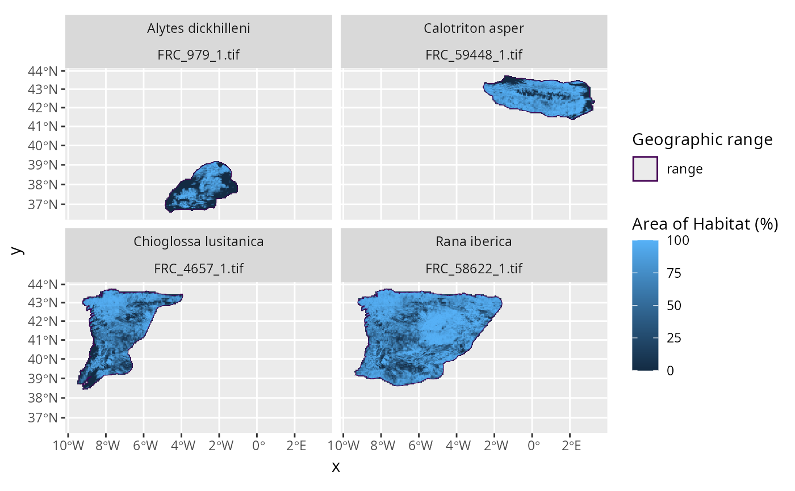
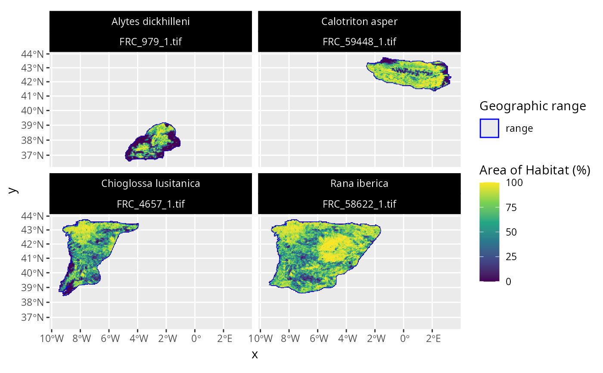
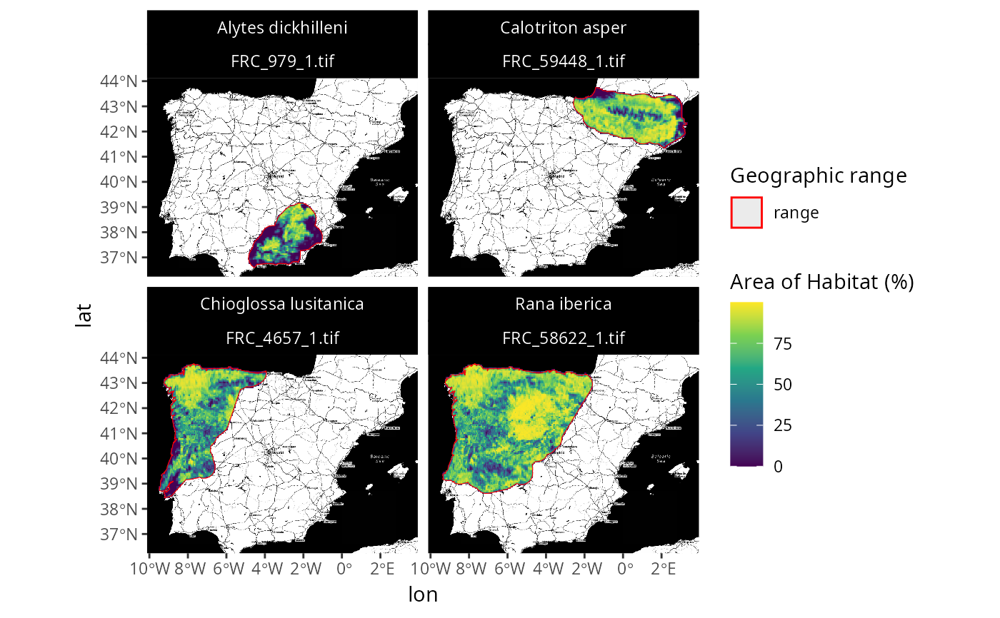

Create a map to compare species geographic range and fractional coverage data.
plot_spp_frc_data(
x,
max_plot = 9,
expand = 0.05,
zoom = NULL,
maptype = NULL,
maxcell = 50000,
...
)sf::st_sf() Object containing the species data.
This object should be produced using the calc_spp_frc_data()
function.
integer Maximum number of Area of Habitat datasets
to plot.
Defaults to 9.
numeric Proportion to expand the plotting limits.
Defaults to 0.05 such that plot limits are extended 5% beyond the
spatial extent of the data.
numeric Value indicating the zoom level for the basemap.
See documentation for the zoom parameter in the ggmap::get_stadiamap()
function for details.
Defaults to NULL such that no basemap is shown.
character Value indicating the name of the
the basemap to use for the plot.
See documentation for the maptype parameter in the
ggmap::get_stadiamap()
function for details.
Defaults to NULL such that no basemap is shown.
Note that the ggmap package must be installed to show a basemap.
integer Maximum number of grid cells for mapping.
Defaults to 50000.
Additional arguments passed to ggmap::get_stadiamap().
A ggplot2::ggplot() object.
Note that data are automatically projected to a geographic coordinate system (EPSG:4326) when they are plotted with a base map. This means that the Area of Habitat data shown in maps that contain a base map might look slightly different from underlying dataset.
# \dontrun{
# find file path for example range data following IUCN Red List data format
## N.B., the range data were not obtained from the IUCN Red List,
## and were instead based on data from GBIF (https://www.gbif.org/)
path <- system.file("extdata", "EXAMPLE_SPECIES.zip", package = "aoh")
# import data
spp_range_data <- read_spp_range_data(path)
# specify settings for data processing
output_dir <- tempdir() # folder to save AOH data
cache_dir <- rappdirs::user_data_dir("aoh") # persistent storage location
n_threads <- parallel::detectCores() - 1 # speed up analysis
# create cache directory if needed
if (!file.exists(cache_dir)) {
dir.create(cache_dir, showWarnings = FALSE, recursive = TRUE)
}
# create species information data
spp_info_data <- create_spp_info_data(
x = spp_range_data,
cache_dir = cache_dir
)
#> ℹ initializing
#> ✔ initializing [352ms]
#>
#> ℹ cleaning species range data
#> ✔ cleaning species range data [3.3s]
#>
#> ℹ importing species summary data
#> ✔ importing species summary data [345ms]
#>
#> ℹ importing species habitat data
#> ✔ importing species habitat data [341ms]
#>
#> ℹ collating species data
#> ✔ collating species data [222ms]
#>
#> ℹ post-processing results
#> ✔ post-processing results [11ms]
#>
#> ✔ finished
# create fractional coverage data for species
spp_aoh_data <- create_spp_frc_data(
x = spp_info_data,
res = 5000,
output_dir = output_dir,
n_threads = n_threads,
cache_dir = cache_dir
)
#> ℹ initializing
#> ✔ initializing [4ms]
#>
#> ℹ importing global elevation data
#> ✔ importing global elevation data [6.7s]
#>
#> ℹ importing global habitat data
#> ! argument to "crosswalk_data" is missing the following 2 habitat classification codes: "7.1", "7.2"
#> ℹ importing global habitat data
#> ✔ importing global habitat data [5.4s]
#>
#> ℹ generating Area of Habitat data
#> skipping 4 species distributions already processed
#> ✔ generating Area of Habitat data [34ms]
#>
#> ℹ post-processing results
#> ✔ post-processing results [33ms]
#>
#> ✔ finished
# create fraction coverage dat for species
spp_frc_data <- calc_spp_frc_data(
x = spp_aoh_data,
res = 5000,
output_dir = output_dir,
cache_dir = cache_dir
)
#> ℹ importing global habitat data
#> skipping 4 species distributions already processed
#> ✔ importing global habitat data [5.1s]
#>
# plot the data to visualize the range maps and fractional coverage data
p <- plot_spp_frc_data(spp_frc_data)
print(p)

# this plot can be customized using ggplot2 functions
# for example, let's style the plot and update the colors
## load ggplot2 package
library(ggplot2)
## customize plot
p2 <-
p +
scale_fill_viridis_c() +
scale_color_manual(values = c("range" = "blue")) +
scale_size_manual(values = c("range" = 1.5)) +
theme(
strip.text = ggplot2::element_text(color = "white"),
strip.background = ggplot2::element_rect(
fill = "black", color = "black"
)
)
## print customized plot
print(p2)

# }
# \dontrun{
# we can also plot the data with a base map too
## note that you might need to install ggmap to run this example
if (require(ggmap)) {
## create customized map with basemap
p3 <-
plot_spp_frc_data(spp_frc_data, zoom = 7, maptype = "stamen_toner") +
scale_fill_viridis_c() +
scale_color_manual(values = c("range" = "red")) +
scale_size_manual(values = c("range" = 1.5)) +
theme(
strip.text = ggplot2::element_text(color = "white"),
strip.background = ggplot2::element_rect(
fill = "black", color = "black"
)
)
## print customized plot
print(p3)
}
#> ℹ © Stadia Maps © Stamen Design © OpenMapTiles © OpenStreetMap contributors.
#> Coordinate system already present. Adding new coordinate system, which will
#> replace the existing one.

# }